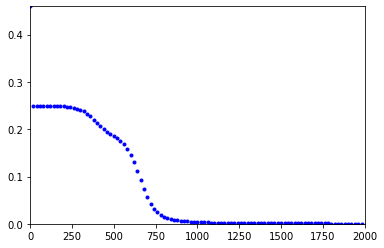
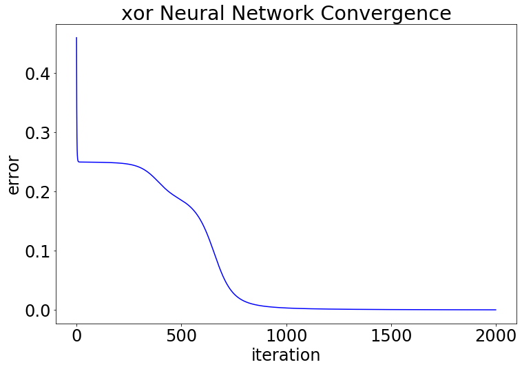
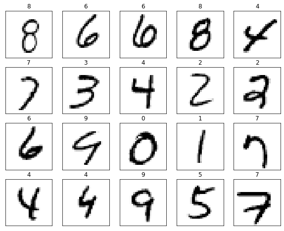
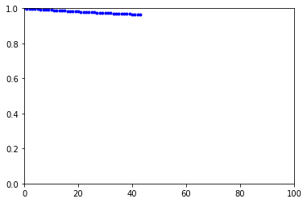

import numpy as np
from functools import partial, reduce
from itertools import accumulate, repeat, chain, takewhile, tee, islice
import random
import more_itertoolsMNIST
def initialize_weights_and_biases(num_nodes, mode=np.random.random):
return np.array([
(mode((m,n))/(n*m), np.zeros(m))
for n, m in zip(num_nodes[:-1], num_nodes[1:])])
def affine(weights_and_biases_pair, x):
return weights_and_biases_pair[0]@x + weights_and_biases_pair[1]
def network_eval(weights_and_biases, x, f=np.tanh):
if len(weights_and_biases) == 0:
return x
else:
layer_output = f(affine(weights_and_biases[0],x))
return network_eval(weights_and_biases[1:],
layer_output, f=f)
def quadratic_cost_derivative(a, y):
return a-y
def cross_entropy_cost_derivative(a, y):
return (a-y)/(a * (1-a))
def nn_gradient_recursion(weights_and_biases, a, y, f, df, cost_derivative=quadratic_cost_derivative):
if len(weights_and_biases) == 0:
return cost_derivative(a,y), ()
z = affine(weights_and_biases[0], a)
grad_a, grad_list = nn_gradient_recursion(
weights_and_biases[1:],
f(z),
y,
f=f,
df=df)
delta = grad_a * df(z)
my_grad = (np.outer(delta, a), delta)
return (weights_and_biases[0][0].T@delta, (my_grad,) + grad_list)
def nn_gradient_sample(weights_and_biases, a, y, f=np.tanh, df=lambda x: 1/np.cosh(x)**2, cost_derivative=quadratic_cost_derivative):
return nn_gradient_recursion(weights_and_biases, a, y, f=f, df=df, cost_derivative=cost_derivative)[1]
def nn_gradient(weights_and_biases, input_data, cost_derivative=quadratic_cost_derivative):
return sum(np.array(nn_gradient_sample(weights_and_biases, *data))
for data in input_data)/len(input_data)
def nn_gradient_descent_sequence(params0, data, learning_rate=0.01, cost_derivative=quadratic_cost_derivative):
def param_improve(params):
return params - learning_rate*nn_gradient(params, data, cost_derivative=cost_derivative)
return iterate_seq(params0, param_improve)
def error(weights, x, y):
return np.sum( (network_eval(weights,x) - y)**2 )# def iterate_seq(x0, update):
# x = x0
# yield x
# while True:
# x = update(x)
# yield x
def iterate_seq(x0, update):
apply = lambda x, f: f(x)
return accumulate(
chain((x0,), repeat(update)),
apply
)
def newton_sequence(x0, f, df):
def newton_improve(x):
return x - f(x)/df(x)
return iterate_seq(x0, newton_improve)
# def filter_cauchy_tol(difference_function = lambda x1, x2: abs(x1 - x2), tol=1e-10):
# def my_filter(iterable):
# x1 = next(iterable)
# yield x1
# x2 = next(iterable)
# while( difference_function(x1, x2) > tol ):
# x1, x2 = x2, next(iterable)
# yield x2
# return my_filter
def filter_cauchy_tol(difference_function = lambda x1, x2: abs(x1 - x2), tol=1e-10):
predicate = lambda tup: difference_function(*tup) > tol
def my_filter(iterable):
copy1, copy2 = tee(iterable)
x0 = next(copy2)
filtered_pairs = takewhile(predicate, zip(copy1, copy2))
filtered_vals = map(lambda tup: tup[1], filtered_pairs)
return chain((x0,), filtered_vals)
return my_filter
# def filter_f_tol(f, tol=1e-10):
# def my_filter(iterable):
# x = next(iterable)
# yield x
# while f(x) > tol:
# x = next(iterable)
# yield x
# return my_filter
def filter_f_tol(f, tol=1e-10):
predicate = lambda x: abs(f(x) > tol)
return partial(takewhile, predicate)
def batch_error(weights, data):
return sum( error(weights, *d) for d in data )/len(data)
def filter_max_iter(max_iter=10**3):
my_filter = lambda iterable: islice(iterable, 0, max_iter)
return my_filter
def pipeline_eval(x, *func_list):
def apply(x, f):
return f(x)
return reduce(apply, func_list, x)
def data_shuffler_generator(data):
while True:
random.shuffle(data)
yield from data
def nn_stochastic_gradient_descent_sequence(params0, batch_stream, learning_rate=0.01, cost_derivative=quadratic_cost_derivative):
def param_improve(params):
batch = next(batch_stream)
return params - learning_rate*nn_gradient(params, batch, cost_derivative=cost_derivative)
return iterate_seq(params0, param_improve)
def batch_error(data, weights):
return sum( error(weights, *d) for d in data )/len(data)
batch_generator = more_itertools.chunkedW0_B0 = initialize_weights_and_biases((2, 4, 1))
data_xor = (
(np.array([0, 0]), np.array([0])),
(np.array([1, 0]), np.array([1])),
(np.array([0, 1]), np.array([1])),
(np.array([1, 1]), np.array([0]))
)weights = W0_B0
learning_rate = 0.3
# learning_rate = .0000005gd_sequence = nn_gradient_descent_sequence(weights, data_xor, learning_rate = learning_rate, cost_derivative=cross_entropy_cost_derivative)
%matplotlib inline
import time
from IPython import display
import matplotlib.pyplot as plt
stride = 20
max_iter = 2000
y_max = 1
for i, weights in enumerate(
islice(
gd_sequence,
0, max_iter, stride)):
e = batch_error(data_xor, weights)
if i == 0:
y_max = e
#plt.clf()
plt.plot(i*stride, e, 'b.')
plt.xlim(0, max_iter)
plt.ylim(0, y_max)
display.display(plt.gcf())
display.clear_output(wait=True)
weights = next(gd_sequence)
errors = pipeline_eval(
nn_gradient_descent_sequence(W0_B0,
data_xor,
learning_rate = learning_rate,
cost_derivative=cross_entropy_cost_derivative),
filter_max_iter(2000),
partial(map,
partial(batch_error, data_xor)),
list)import matplotlib
matplotlib.rcParams.update({'font.size': 24})plt.figure(figsize=(12, 8))
plt.plot(errors, 'b-')
plt.ylabel('error')
plt.xlabel('iteration')
plt.xticks([i for i in range(0, len(errors)+1, 500)])
plt.title('xor Neural Network Convergence')
plt.savefig('xor_nn_convergence.svg')
for x, y in data_xor:
y_hat = network_eval(weights, x)
print(f'x = {x}\t y = {y}\t output={y_hat}\t error={y_hat-y}')x = [0 0] y = [0] output=[0.00142572] error=[0.00142572]
x = [1 0] y = [1] output=[0.97030578] error=[-0.02969422]
x = [0 1] y = [1] output=[0.97035425] error=[-0.02964575]
x = [1 1] y = [0] output=[0.00242435] error=[0.00242435]import struct
import pickle
import numpy as np
import matplotlib.pyplot as plt
def read_MNIST_labels(file_path, max_records = None):
with open(file_path, 'rb') as file:
labels = []
magic_word = file.read(4)
total_label_records = struct.unpack('>i',file.read(4))[0]
if not max_records == None:
total_label_records = min(total_label_records,max_records[0])
for i in range(total_label_records):
labels.append(struct.unpack('B',file.read(1))[0])
return labels
def read_MNIST_images(file_path, max_records = None):
with open(file_path,'rb') as file:
images = []
magic_word = file.read(4)
total_image_records = struct.unpack('>i',file.read(4))[0]
row_size = struct.unpack('>i',file.read(4))[0]
col_size = struct.unpack('>i',file.read(4))[0]
if not max_records == None:
total_image_records = min(total_image_records,max_records[0])
for _ in range(total_image_records):
image = []
for _ in range(row_size*col_size):
image.append(struct.unpack('B',file.read(1))[0] / 255)
images.append(np.array(image))
return images
def format_labels(labels):
expected = []
for i in range(len(labels)):
l = [0] * 10
l[labels[i]] = 1
expected.append(l)
return expected
def print_image(img):
for r in range(28):
for c in range(28):
str = " "
if img[r*28+c] > 150: str = 'x'
print(str,end='')
print('')
def one_hot_encode(label):
ret = np.zeros(10)
ret[label] = 1
return ret
def one_hot_decode(label):
return int(np.argmax(label))
plot_image = lambda img: plt.imshow(img.reshape(28, 28) / 255, cmap = 'Greys')num_records = None
MNIST_data = list(zip(
read_MNIST_images('MNIST/train-images.idx3-ubyte', num_records),
[one_hot_encode(label) for label in read_MNIST_labels('MNIST/train-labels.idx1-ubyte', num_records)]
))
MNIST_test_data = list(zip(
read_MNIST_images('MNIST/t10k-images.idx3-ubyte'),
[one_hot_encode(label) for label in read_MNIST_labels('MNIST/t10k-labels.idx1-ubyte')]
))
def data_shuffler_generator(data):
while True:
random.shuffle(data)
yield from data
MNIST_data_stream = data_shuffler_generator(MNIST_data)
fig, axes = plt.subplots(4, 5, figsize=(10, 8))
for ax, (image, label) in zip(axes.flatten(), MNIST_data_stream):
#plot_image(image)
ax.imshow(image.reshape(28, 28), cmap = 'Greys')
ax.set_title(one_hot_decode(label))
ax.set_xticks([])
ax.set_yticks([])
plt.show()
weights = initialize_weights_and_biases((28**2, 50, 50, 10), np.zeros)learning_rate = .005
batch_size = 100sgd_sequence = nn_stochastic_gradient_descent_sequence(
weights,
batch_generator(MNIST_data_stream, batch_size),
learning_rate = learning_rate,
cost_derivative = cross_entropy_cost_derivative)
%matplotlib inline
import time
from IPython import display
import matplotlib.pyplot as plt
stride = 1
max_iter = 10**2
y_max = 1
for i, weights in enumerate(
islice(
sgd_sequence,
0, max_iter, stride)):
e = batch_error(MNIST_test_data[:100], weights)
if i == 0:
y_max = e
#plt.clf()
plt.plot(i*stride, e, 'b.')
plt.xlim(0, max_iter)
#plt.ylim(0, y_max)
plt.ylim(0, 1)
display.display(plt.gcf())
display.clear_output(wait=True)
#weights = next(sgd_sequence)--------------------------------------------------------------------------- KeyboardInterrupt Traceback (most recent call last) <ipython-input-77-cb185dd898f8> in <module> 24 #plt.ylim(0, y_max) 25 plt.ylim(0, 1) ---> 26 display.display(plt.gcf()) 27 display.clear_output(wait=True) 28 /usr/local/lib/python3.6/dist-packages/IPython/core/display.py in display(include, exclude, metadata, transient, display_id, *objs, **kwargs) 311 publish_display_data(data=obj, metadata=metadata, **kwargs) 312 else: --> 313 format_dict, md_dict = format(obj, include=include, exclude=exclude) 314 if not format_dict: 315 # nothing to display (e.g. _ipython_display_ took over) /usr/local/lib/python3.6/dist-packages/IPython/core/formatters.py in format(self, obj, include, exclude) 178 md = None 179 try: --> 180 data = formatter(obj) 181 except: 182 # FIXME: log the exception /usr/local/lib/python3.6/dist-packages/decorator.py in fun(*args, **kw) 230 if not kwsyntax: 231 args, kw = fix(args, kw, sig) --> 232 return caller(func, *(extras + args), **kw) 233 fun.__name__ = func.__name__ 234 fun.__doc__ = func.__doc__ /usr/local/lib/python3.6/dist-packages/IPython/core/formatters.py in catch_format_error(method, self, *args, **kwargs) 222 """show traceback on failed format call""" 223 try: --> 224 r = method(self, *args, **kwargs) 225 except NotImplementedError: 226 # don't warn on NotImplementedErrors /usr/local/lib/python3.6/dist-packages/IPython/core/formatters.py in __call__(self, obj) 339 pass 340 else: --> 341 return printer(obj) 342 # Finally look for special method names 343 method = get_real_method(obj, self.print_method) /usr/local/lib/python3.6/dist-packages/IPython/core/pylabtools.py in <lambda>(fig) 246 247 if 'png' in formats: --> 248 png_formatter.for_type(Figure, lambda fig: print_figure(fig, 'png', **kwargs)) 249 if 'retina' in formats or 'png2x' in formats: 250 png_formatter.for_type(Figure, lambda fig: retina_figure(fig, **kwargs)) /usr/local/lib/python3.6/dist-packages/IPython/core/pylabtools.py in print_figure(fig, fmt, bbox_inches, **kwargs) 130 FigureCanvasBase(fig) 131 --> 132 fig.canvas.print_figure(bytes_io, **kw) 133 data = bytes_io.getvalue() 134 if fmt == 'svg': /usr/local/lib/python3.6/dist-packages/matplotlib/backend_bases.py in print_figure(self, filename, dpi, facecolor, edgecolor, orientation, format, bbox_inches, **kwargs) 2058 bbox_artists = kwargs.pop("bbox_extra_artists", None) 2059 bbox_inches = self.figure.get_tightbbox(renderer, -> 2060 bbox_extra_artists=bbox_artists) 2061 pad = kwargs.pop("pad_inches", None) 2062 if pad is None: /usr/local/lib/python3.6/dist-packages/matplotlib/figure.py in get_tightbbox(self, renderer, bbox_extra_artists) 2365 2366 for a in artists: -> 2367 bbox = a.get_tightbbox(renderer) 2368 if bbox is not None and (bbox.width != 0 or bbox.height != 0): 2369 bb.append(bbox) /usr/local/lib/python3.6/dist-packages/matplotlib/axes/_base.py in get_tightbbox(self, renderer, call_axes_locator, bbox_extra_artists) 4353 4354 if self.axison: -> 4355 bb_xaxis = self.xaxis.get_tightbbox(renderer) 4356 if bb_xaxis: 4357 bb.append(bb_xaxis) /usr/local/lib/python3.6/dist-packages/matplotlib/axis.py in get_tightbbox(self, renderer) 1162 ticks_to_draw = self._update_ticks() 1163 -> 1164 self._update_label_position(renderer) 1165 1166 # go back to just this axis's tick labels /usr/local/lib/python3.6/dist-packages/matplotlib/axis.py in _update_label_position(self, renderer) 2012 # get bounding boxes for this axis and any siblings 2013 # that have been set by `fig.align_xlabels()` -> 2014 bboxes, bboxes2 = self._get_tick_boxes_siblings(renderer=renderer) 2015 2016 x, y = self.label.get_position() /usr/local/lib/python3.6/dist-packages/matplotlib/axis.py in _get_tick_boxes_siblings(self, renderer) 1996 # if we want to align labels from other axes: 1997 for nn, axx in enumerate(grp.get_siblings(self.axes)): -> 1998 ticks_to_draw = axx.xaxis._update_ticks() 1999 tlb, tlb2 = axx.xaxis._get_tick_bboxes(ticks_to_draw, renderer) 2000 bboxes.extend(tlb) /usr/local/lib/python3.6/dist-packages/matplotlib/axis.py in _update_ticks(self) 1085 tick.set_label1(label) 1086 tick.set_label2(label) -> 1087 minor_locs = self.get_minorticklocs() 1088 minor_labels = self.minor.formatter.format_ticks(minor_locs) 1089 minor_ticks = self.get_minor_ticks(len(minor_locs)) /usr/local/lib/python3.6/dist-packages/matplotlib/axis.py in get_minorticklocs(self) 1327 """Get the array of minor tick locations in data coordinates.""" 1328 # Remove minor ticks duplicating major ticks. -> 1329 major_locs = self.major.locator() 1330 minor_locs = self.minor.locator() 1331 transform = self._scale.get_transform() /usr/local/lib/python3.6/dist-packages/matplotlib/ticker.py in __call__(self) 2076 def __call__(self): 2077 vmin, vmax = self.axis.get_view_interval() -> 2078 return self.tick_values(vmin, vmax) 2079 2080 def tick_values(self, vmin, vmax): /usr/local/lib/python3.6/dist-packages/matplotlib/ticker.py in tick_values(self, vmin, vmax) 2084 vmin, vmax = mtransforms.nonsingular( 2085 vmin, vmax, expander=1e-13, tiny=1e-14) -> 2086 locs = self._raw_ticks(vmin, vmax) 2087 2088 prune = self._prune /usr/local/lib/python3.6/dist-packages/matplotlib/ticker.py in _raw_ticks(self, vmin, vmax) 2023 if self._nbins == 'auto': 2024 if self.axis is not None: -> 2025 nbins = np.clip(self.axis.get_tick_space(), 2026 max(1, self._min_n_ticks - 1), 9) 2027 else: /usr/local/lib/python3.6/dist-packages/matplotlib/axis.py in get_tick_space(self) 2180 ends = self.axes.transAxes.transform([[0, 0], [1, 0]]) 2181 length = ((ends[1][0] - ends[0][0]) / self.axes.figure.dpi) * 72 -> 2182 tick = self._get_tick(True) 2183 # There is a heuristic here that the aspect ratio of tick text 2184 # is no more than 3:1 /usr/local/lib/python3.6/dist-packages/matplotlib/axis.py in _get_tick(self, major) 1931 else: 1932 tick_kw = self._minor_tick_kw -> 1933 return XTick(self.axes, 0, '', major=major, **tick_kw) 1934 1935 def _get_label(self): /usr/local/lib/python3.6/dist-packages/matplotlib/axis.py in __init__(self, axes, loc, label, size, width, color, tickdir, pad, labelsize, labelcolor, zorder, gridOn, tick1On, tick2On, label1On, label2On, major, labelrotation, grid_color, grid_linestyle, grid_linewidth, grid_alpha, **kw) 159 self.tick2line = self._get_tick2line() 160 self.gridline = self._get_gridline() --> 161 self.label1 = self._get_text1() 162 self.label2 = self._get_text2() 163 /usr/local/lib/python3.6/dist-packages/matplotlib/axis.py in _get_text1(self) 434 color=self._labelcolor, 435 verticalalignment=vert, --> 436 horizontalalignment=horiz, 437 ) 438 t.set_transform(trans) /usr/local/lib/python3.6/dist-packages/matplotlib/text.py in __init__(self, x, y, text, color, verticalalignment, horizontalalignment, multialignment, fontproperties, rotation, linespacing, rotation_mode, usetex, wrap, **kwargs) 155 self.set_usetex(usetex) 156 self.set_wrap(wrap) --> 157 self.set_verticalalignment(verticalalignment) 158 self.set_horizontalalignment(horizontalalignment) 159 self._multialignment = multialignment /usr/local/lib/python3.6/dist-packages/matplotlib/text.py in set_verticalalignment(self, align) 1132 align=align) 1133 self._verticalalignment = align -> 1134 self.stale = True 1135 1136 def set_text(self, s): /usr/local/lib/python3.6/dist-packages/matplotlib/artist.py in stale(self, val) 217 return self._stale 218 --> 219 @stale.setter 220 def stale(self, val): 221 self._stale = val KeyboardInterrupt:

batch_generator<function more_itertools.more.chunked(iterable, n, strict=False)>sgd_seq = nn_stochastic_gradient_descent_sequence(
weights,
batch_generator(MNIST_data_stream, batch_size),
learning_rate = learning_rate,
cost_derivative = cross_entropy_cost_derivative)
for i in range(4):
print(partial(batch_error, MNIST_test_data[:100])(next(sgd_seq)))0.9646761305198625
0.9640561064030005
0.9634391262399656
0.9627954629397156test = filter_max_iter(10)(nn_stochastic_gradient_descent_sequence(
weights,
batch_generator(MNIST_data_stream, batch_size),
learning_rate = learning_rate,
cost_derivative = cross_entropy_cost_derivative))for t in test:
print(partial(batch_error, MNIST_test_data[:100])(t))0.9646761305198625
0.9640840800438828
0.9633833203290183
0.9627094723824651
0.9620405896704094
0.9613351857604526
0.9606665852347175
0.9600971714746368
0.959453353490375
0.9588272546147433test = list(filter_max_iter(10)(
nn_stochastic_gradient_descent_sequence(
weights,
batch_generator(MNIST_data_stream, batch_size),
learning_rate = learning_rate,
cost_derivative = cross_entropy_cost_derivative)))partial(batch_error, MNIST_test_data[:100])(test[0])--------------------------------------------------------------------------- ValueError Traceback (most recent call last) <ipython-input-72-74a0a6f95030> in <module> ----> 1 partial(batch_error, MNIST_test_data[:100])(test[0]) <ipython-input-57-b130867a9f2f> in batch_error(weights, data) 52 53 def batch_error(weights, data): ---> 54 return sum( error(weights, *d) for d in data )/len(data) 55 56 def filter_max_iter(max_iter=10**3): <ipython-input-57-b130867a9f2f> in <genexpr>(.0) 52 53 def batch_error(weights, data): ---> 54 return sum( error(weights, *d) for d in data )/len(data) 55 56 def filter_max_iter(max_iter=10**3): <ipython-input-9-2d369390d074> in error(weights, x, y) 50 51 def error(weights, x, y): ---> 52 return np.sum( (network_eval(weights,x) - y)**2 ) <ipython-input-9-2d369390d074> in network_eval(weights_and_biases, x, f) 11 return x 12 else: ---> 13 layer_output = f(affine(weights_and_biases[0],x)) 14 return network_eval(weights_and_biases[1:], 15 layer_output, f=f) <ipython-input-9-2d369390d074> in affine(weights_and_biases_pair, x) 5 6 def affine(weights_and_biases_pair, x): ----> 7 return weights_and_biases_pair[0]@x + weights_and_biases_pair[1] 8 9 def network_eval(weights_and_biases, x, f=np.tanh): ValueError: matmul: Input operand 1 has a mismatch in its core dimension 0, with gufunc signature (n?,k),(k,m?)->(n?,m?) (size 50 is different from 784)
evaluate_vs_testing_data = partial(batch_error, MNIST_test_data[:100])
errors = pipeline_eval(
nn_stochastic_gradient_descent_sequence(
weights,
batch_generator(MNIST_data_stream, batch_size),
learning_rate = learning_rate,
cost_derivative = cross_entropy_cost_derivative),
partial(map, evaluate_vs_testing_data),
filter_max_iter(10**2),
list)errors[:5][0.9646761305198625,
0.9640585930478918,
0.9634055838164416,
0.9627506025230287,
0.9621594606878134]batch_error(test, MNIST_test_data)0.9058550432440848test_batch_generator = batch_generator(MNIST_data_stream, 5)
batch = next(test_batch_generator)my_sgd = nn_gradient_descent_sequence(
weights,
batch,
learning_rate = learning_rate)next(my_sgd)/usr/local/lib/python3.6/dist-packages/ipykernel_launcher.py:36: RuntimeWarning: overflow encountered in square
/usr/local/lib/python3.6/dist-packages/ipykernel_launcher.py:36: RuntimeWarning: overflow encountered in cosh--------------------------------------------------------------------------- TypeError Traceback (most recent call last) <ipython-input-50-5280180777d8> in <module> ----> 1 next(my_sgd) <ipython-input-4-7d56bee9030b> in <lambda>(x, f) 7 8 def iterate_seq(x0, update): ----> 9 apply = lambda x, f: f(x) 10 return accumulate( 11 chain((x0,), repeat(update)), <ipython-input-36-7217e0f8c202> in param_improve(params) 43 def nn_gradient_descent_sequence(params0, data, learning_rate=0.01): 44 def param_improve(params): ---> 45 return params - learning_rate*nn_gradient(params, data) 46 return iterate_seq(params0, param_improve) 47 <ipython-input-36-7217e0f8c202> in nn_gradient(weights_and_biases, input_data) 39 def nn_gradient(weights_and_biases, input_data): 40 return sum(np.array(nn_gradient_summand(weights_and_biases, *data)) ---> 41 for data in input_data)/len(input_data) 42 43 def nn_gradient_descent_sequence(params0, data, learning_rate=0.01): TypeError: object of type 'itertools.islice' has no len()
weights = next(sgd_sequence)/usr/local/lib/python3.6/dist-packages/ipykernel_launcher.py:36: RuntimeWarning: overflow encountered in square
/usr/local/lib/python3.6/dist-packages/ipykernel_launcher.py:36: RuntimeWarning: overflow encountered in cosh--------------------------------------------------------------------------- TypeError Traceback (most recent call last) /usr/local/lib/python3.6/dist-packages/more_itertools/more.py in last(iterable, default) 205 else: --> 206 return deque(iterable, maxlen=1)[-1] 207 except (IndexError, TypeError, StopIteration): <ipython-input-4-7d56bee9030b> in <lambda>(x, f) 8 def iterate_seq(x0, update): ----> 9 apply = lambda x, f: f(x) 10 return accumulate( <ipython-input-36-7217e0f8c202> in param_improve(params) 44 def param_improve(params): ---> 45 return params - learning_rate*nn_gradient(params, data) 46 return iterate_seq(params0, param_improve) <ipython-input-36-7217e0f8c202> in nn_gradient(weights_and_biases, input_data) 40 return sum(np.array(nn_gradient_summand(weights_and_biases, *data)) ---> 41 for data in input_data)/len(input_data) 42 TypeError: object of type 'itertools.islice' has no len() During handling of the above exception, another exception occurred: ValueError Traceback (most recent call last) <ipython-input-40-927c5737b7a1> in <module> ----> 1 weights = next(sgd_sequence) <ipython-input-39-217f32b75f30> in <genexpr>(.0) 6 batch, 7 learning_rate = learning_rate)) ----> 8 for batch in 9 batch_generator(MNIST_data_stream, batch_size)) /usr/local/lib/python3.6/dist-packages/more_itertools/more.py in last(iterable, default) 208 if default is _marker: 209 raise ValueError( --> 210 'last() was called on an empty iterable, and no default was ' 211 'provided.' 212 ) ValueError: last() was called on an empty iterable, and no default was provided.
from math import sinϵ = 1e-10
x = 1
y = x - ϵval1 = sin(x) - sin(y)
print(val1)
val2 = sin(x)*(1-sin(x)/sin(y))
print(val2)5.403022473871033e-11
-5.403026672509223e-11val1 - val21.0806049146380257e-10